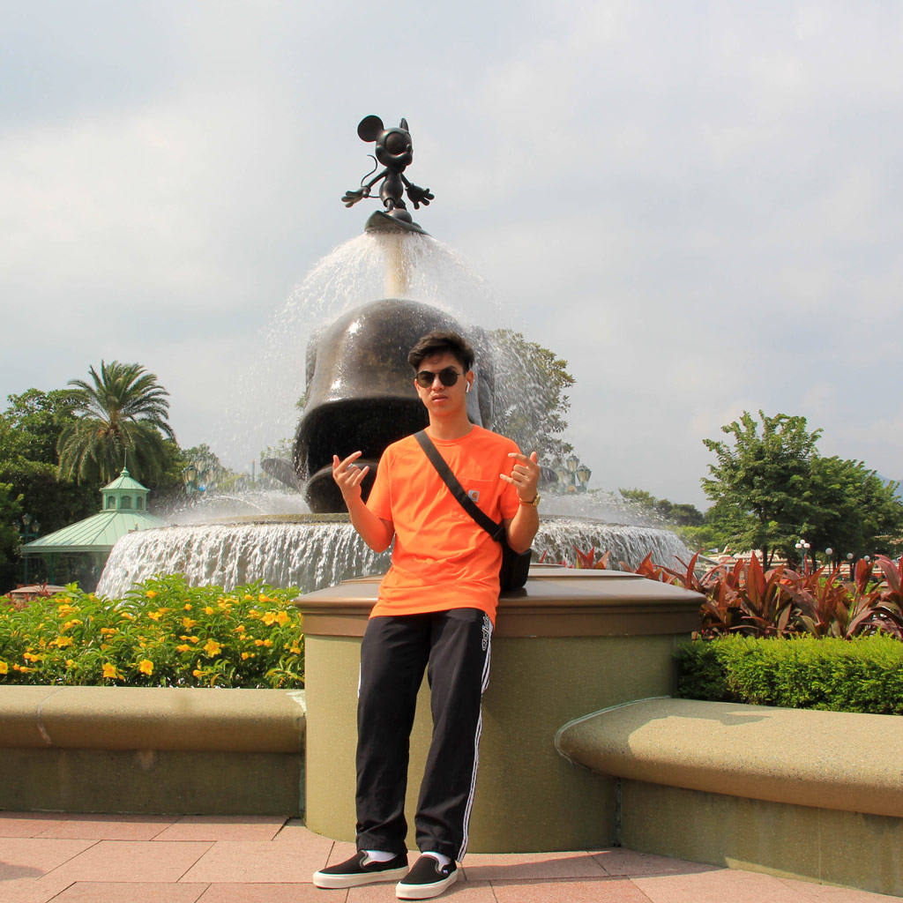
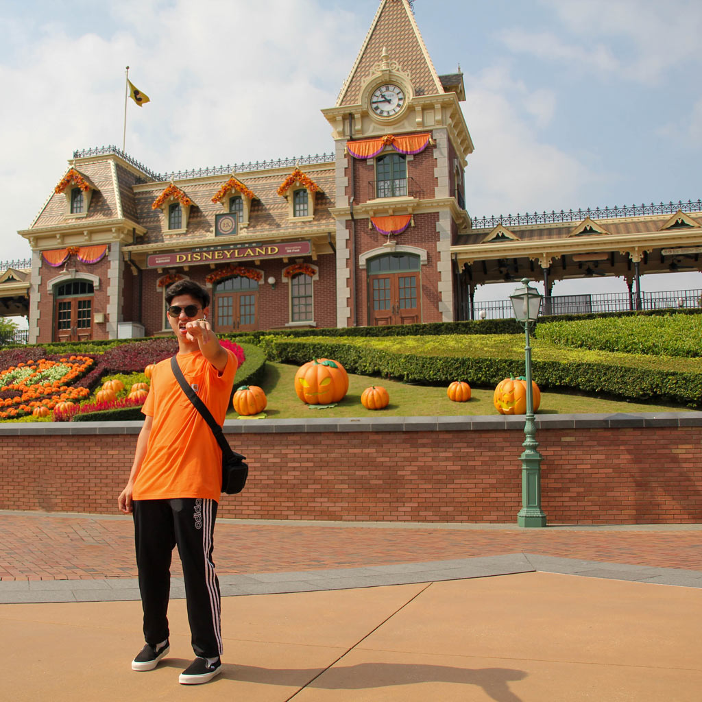
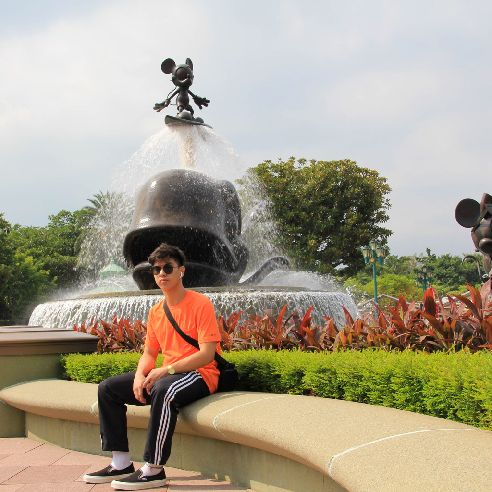
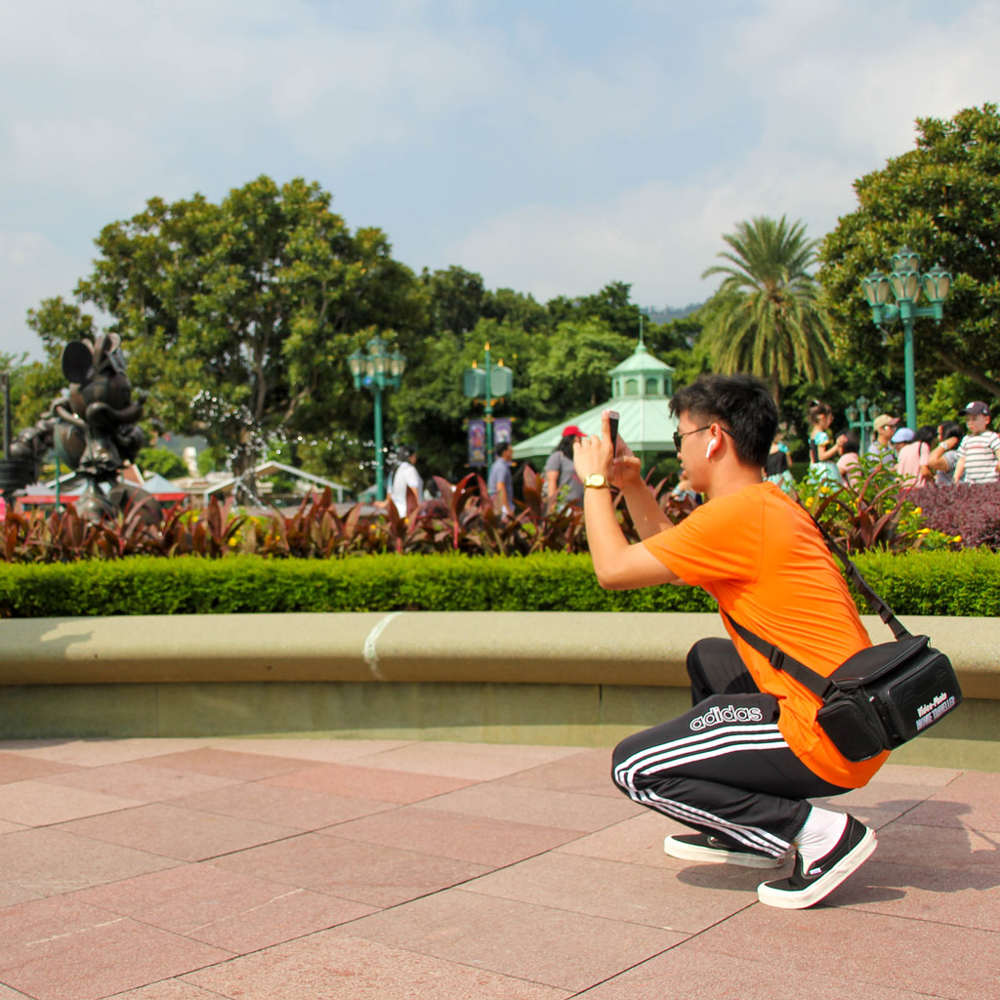

Hello, my name is Hanz Krystlarrz, and I am a 19-year-old who is passionate about photography and graphic design. I have been interested in photography since I was young and have recently discovered a love for graphic design. I am currently enrolled in the multimedia communication program and am on the final year of my studies.
In my free time, I enjoy experimenting with new techniques and styles in photography and graphic design. I find inspiration in everyday life and aim to capture and create unique and compelling visual content. I am always looking for new challenges and opportunities to grow and expand my skill set.
While I wouldn't describe myself as a professional, I have experience working with Adobe Illustrator for illustrations, Photoshop for photo editing and graphic design, InDesign for layout design, and Premiere Pro for video editing.
The projects you see here are ones I've completed for myself and my school, I'm eager to work with a real client and take on projects for them in the future.
© 2022-2023. Hand crafted with ❤ + Flexbox + CSS Grid by James Neufeld.